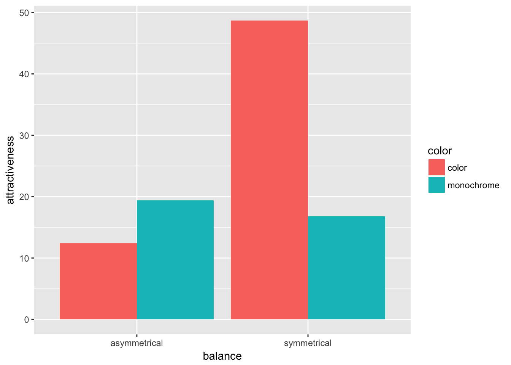

12 Interactive Assignment 8: Between-subject ANOVA
This assignment will cover the ideas involved with doing one-way and two-way between-subject ANOVAs in R. It will cover:
- How to set up data for ANOVAs in R
- How to use the
describeBy()function in thepsychpackage to examine marginal means in ANOVA - How to evaluate marginal means for main effects and interactions
- How to use the
aov()function to do a one-way and a two-way ANOVA and interpret the output - How to use
ggplot()to graph a two-way ANOVA.
ANOVA stands for ANanlysis Of VAriance and examines whether the variance due to an independent variable or variables is significantly greater than the natural variance within a series of data. The idea is that if an independent variable can explain a significantly greater proprotion of variance than the natural variance in the data, then that variable is important.
In this lab, we will investigate data from Zellner et al. (2010) which explored how symmetry and color affected people’s preferences for food. The data are available in the dataset “IA8food.csv”.
Step 1: Load the data into R as a dataframe named “food”. In addition, load the tidyverse and psych packages.
The variables are as follows: subject – participant number
balance – whether the food was balanced or symmetrical or unbalanced
color – whether the food was monochrome or colorful
attractiveness – measure of how attractive participants found the food (from -100 to 100)
willingness – measure of how willing people were to try the food (-100 to 100)
liking – how much they reported liking the food (-100 to 100)
The researchers’ main hypothesis is investigating how symmetry (the balance variable) and color affect how people view food.
Question 1: What is the design of this study using ANOVA terminology? What are the factors and what are the levels?
Step 2: Use the describeBy() function to fill out the following table, to investigate the means and standard deviations of the main effects.
For instance, to find the main effects of balance using of the attractiveness as the dependent variable, I would type:
describeBy(food$attractiveness, food$balance)## $asymmetrical
## vars n mean sd median trimmed mad min max range skew kurtosis
## X1 1 34 15.9 42.88 12.5 15.59 47.08 -60.7 92.9 153.6 0.08 -0.91
## se
## X1 7.35
##
## $symmetrical
## vars n mean sd median trimmed mad min max range skew
## X1 1 34 32.75 38.37 36.99 34.22 33.14 -66.99 99.83 166.82 -0.47
## kurtosis se
## X1 -0.2 6.58
##
## attr(,"call")
## by.default(data = x, INDICES = group, FUN = describe, type = type)Question 2: Fill out the tables below, the first one with the means and the second one with the standard deviations. Note that I already started to fill out the tables. What main effects do you see?
| Mean | Attractiveness | Willing | Liking |
|---|---|---|---|
| Symmetrical | 32.75 | ||
| Unsymmetrical | 15.9 | ||
| Monochrome | |||
| Colorful |
| Standard Deviation | Attractiveness | Willing | Liking |
|---|---|---|---|
| Symmetrical | 42.88 | ||
| Unsymmetrical | 38.37 | ||
| Monochrome | |||
| Colorful |
Now we want to look at the means of each group to see if there are any interactions. In order to do this, we can use the describeBy variable and give it two different variables to break down our data. In order to do this for attractiveness, we would type the following:
describeBy(food$attractiveness, list(food$balance, food$color), mat=T)## item group1 group2 vars n mean sd median trimmed
## X11 1 asymmetrical color 1 17 12.39941 41.29885 7.94 11.72333
## X12 2 symmetrical color 1 17 48.69941 22.89846 42.00 47.39467
## X13 3 asymmetrical monochrome 1 17 19.40059 45.39939 13.78 20.06200
## X14 4 symmetrical monochrome 1 17 16.80059 44.39952 17.68 16.85133
## mad min max range skew kurtosis se
## X11 45.72338 -57.96 92.90 150.86 0.11536118 -0.9298756 10.016442
## X12 23.75125 17.60 99.37 81.77 0.55513242 -0.8589993 5.553693
## X13 51.38692 -60.70 89.58 150.28 0.01654903 -1.1328890 11.010970
## X14 47.72489 -66.99 99.83 166.82 0.06229426 -1.0049512 10.768465Notice at the end I had to add the mat = T option. This allows R to display the data better.
Step 3: Use the describeBy() function to examine the means for the willing and liking variable.
Another way to evaluate whether there are interactions between variables is to plot them. Now we will examine how to plot means data in R with ggplot. We can do this with a bar graph.
To do this in ggplot, we have to use the stat_summary() function, which tells ggplot to plot means, rather than the actual values themselves.
In the first line, I add the data we will use, including the aes() function in the main ggplot() option. Notice that when we do a two-group ANOVA, we have two different independent variables. In ggplot, I have to assign one of these to be the “x” variable and one to be the “grouping” variable, which is in the “fill” option. It tells ggplot to “fill” the different levels of the color variable (color or monochrome) with different colors. Since each of the independent variables are separate, it is arbitrary which one I say is the “x” variable and which one is the “fill” variable.
Here is the code we will use:
ggplot(data = food, aes(x = balance, y = attractiveness, fill = color)) +
stat_summary(fun.y = mean, geom = 'bar', position = 'dodge')
Question 3: Does it look like there is an interaction between balance and color?
Question 4: Type the graph below, but switch the x variable and the fill variable. What happens to the plot?
Step 4: Change the code for graphing in order to graph the willing variable as the dependent variable. Then change the code for liking as the dependent variable
Question 5: Does it look like there is an interaction between balance and color for the willing variable? What about for the liking variable?
Now after all this graphing, we will get to actually doing the ANOVA. The code to do the ANOVA with balance and color as factors predicting attractiveness is as follows:
x = aov(attractiveness~balance*color, data = food)
summary(x)## Df Sum Sq Mean Sq F value Pr(>F)
## balance 1 4827 4827 3.083 0.0839 .
## color 1 2635 2635 1.683 0.1992
## balance:color 1 6431 6431 4.108 0.0469 *
## Residuals 64 100198 1566
## ---
## Signif. codes: 0 '***' 0.001 '**' 0.01 '*' 0.05 '.' 0.1 ' ' 1In the output, the first two rows give us the sums of squares, mean squares, F, and p-value for the balance and color main effects. The last row is the interaction between balance and color.
Question 6: Based on the output, are there any significant main effects? Interactions? How does this relate to what you predicted after looking at the means and the graphs?
Question 7: What do you think explains the interaction (or lack of interaction) that you found in question 6. Try to use your best guess to explain what the data mean.
Step 5: Using the code above, repeat the same steps to conduct the ANOVA using willing and liking as dependent variables, instead of attractiveness.
Question 8: Based on the output, are there any significant main effects for the willing and liking variable? Interactions? How does this relate to what you predicted after looking at the means and the graphs?
Question 9: What do you think explains the results that you found in question 8 Try to use your best guess to explain what the data mean.